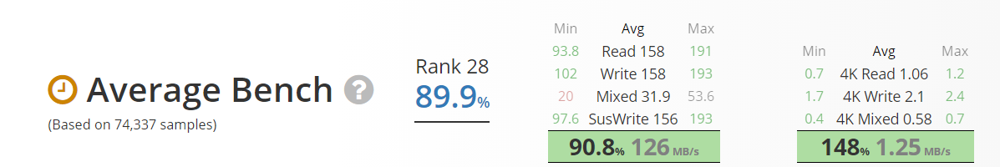
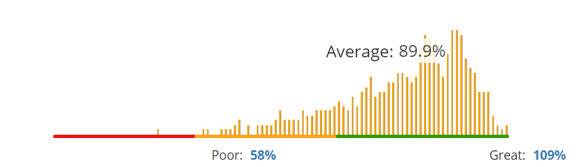

-

$67.00 - $79.00 -
- Specifications
- Manufacturer: Toshiba
- Capacity: 2 TB
- Price / GB: $0.033
- Type: 7200RPM
- Cache: 64 MB
- Form Factor: 3.5"
- Interface: SATA 6 Gb/s
- NVME: No
- 
- 
- Features
- - Designed for everyday desktop computing.
- - High performance with 7200 RPM and 64MB cache.
- - Built-in shock sensors and ramp loading technology.
- - Advanced Format technology helps deliver drive efficiency and reliability.
- - Includes Toshiba 2-year standard limited warranty.